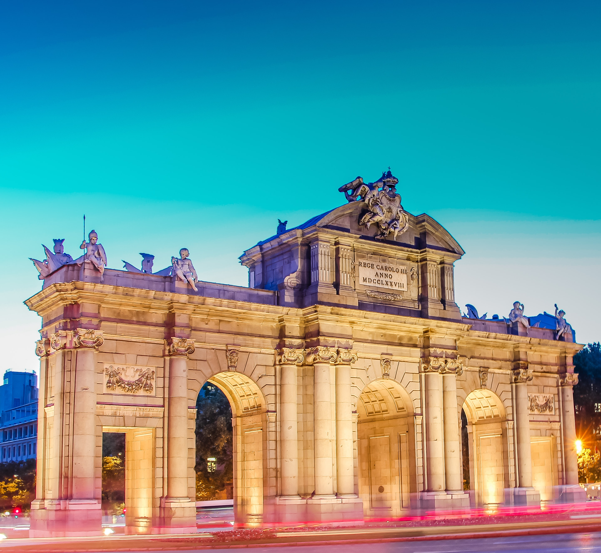

- daily news
- plans
- faq
Museums
European Museums You Can Visit for Free
Traveling around Europe can be very expensive. But with a little planning, you can visit these four world-famous art museums for free!
1. Prado – Madrid

" collections of Spanish kings and queens can be found at the Prado Museum in Madrid, which had its 200th birthday in November 2019. Painters like Velázquez, Goya, Titian and Raphael can all be seen here. And it's free to enter the main galleries Monday through Saturday from 6 to 8 p.m., as well as on Sundays and holidays from 5 to 7 p.m.